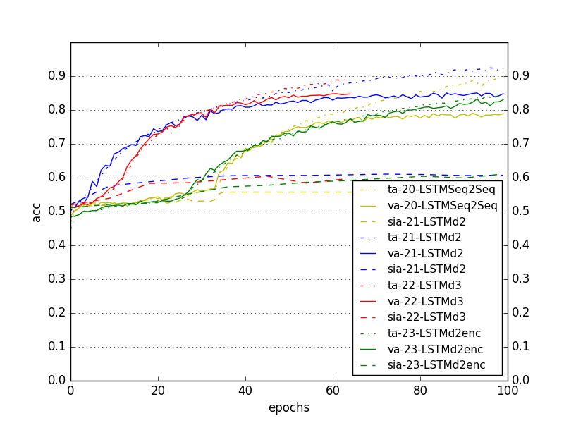

2017-08-24
Comparison of LSTMSeq2Seq, LSTMd2, LSTMd3, LSTMd2enc (with padding)
- LSTMSeq2Seq => Using Seq2Seq library
- LSTMd2 => depth = 2
- LSTMd3 => depth = 3
- LSTMd2enc => depth = 2, additional fc layer after LSTMs

Figure 1a. Comparison of (a) accuracies, (b) losses of LSTMSeq2Seq, LSTMd2, LSTMd3, LSTMd2enc (with padding in output)
Comparison of different architectures (with padding)
- Word => word i as fraction i/51
- encWord => word feature encoded by lipreader ater LSTM
- OHWord => one-hot encoded word
- OHWord-fc => one-hot encoded word, and then 1 fc layer
- Enc-OHWord => encoded word feature + one-hot encoded word
- Enc-Fc-OHWord-fc => (encoded word feature - fc layer) + (one-hot encoded word + fc layer)


Figure 2a. Comparison of training, validation and speaker-independent (a) accuracies, (b) losses for different architectures
- It can be seen that Enc-OHWord is the best architecture overall
SUMMARY
Realized output having padding gives awesome accuracies but does not reflect actual word-classification accuracy
- Accuracies are for output with padding, so, cannot be trusted
Accuracies in paper: LIPREADING WITH LONG SHORT-TERM MEMORY:
- Speaker-dependent accuracy - 79.4%
- Speaker-independent accuracy - 79.6%
Using LipReader "LSTM-h256-depth2-LSTMactivtanh-enc64-encodedActivsigmoid-Adam-1e-03-GRIDcorpus-s0107-s0909-tMouth-vMouth-NOmeanSub-epoch099-tl0.3307-ta0.8417-vl0.3782-va0.8304.hdf5"
- Speaker-dependent: Training accuracy - 84.17%, Validation accuracy - 83.04%
- Speaker-independent accuracy - 73.86%